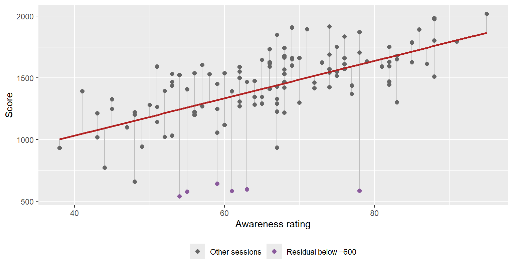

fit <- lm(score ~ awareness, data = sessions)
coef(fit)(Intercept) awareness
426.13072 15.15319 confint(fit) 2.5 % 97.5 %
(Intercept) 172.1697 680.09176
awareness 11.3806 18.92578The line through a scatterplot: slope, R² and residuals
Going further. This page extends Relationships and Correlation. Nothing here is needed for the labs or the assessment. Read it if your team wants to say how much one measure changes with another, or if a residual might be hiding your finding.
Correlation says how tightly two variables follow a line. Simple linear regression finds that line, and so answers a more useful question: how much does one variable change, on average, for each unit of the other?
fit <- lm(score ~ awareness, data = sessions)
coef(fit)(Intercept) awareness
426.13072 15.15319 confint(fit) 2.5 % 97.5 %
(Intercept) 172.1697 680.09176
awareness 11.3806 18.92578lm() stands for linear model. score ~ awareness reads “score as explained by awareness”, the same formula style as boxplot(y ~ group). The result describes a straight line:
\[\text{predicted score} = 426 + 15.2 \times \text{awareness}\]
The slope is the number that matters: each extra point of awareness goes with 15.2 more points of score, on average (95% CI 11.4 to 18.9). It is in the units of the question, so a designer can use it: the 18-point gap in average awareness between Novices and Veterans goes with about 280 points of score.
The intercept is the predicted score at awareness zero: 426. No player has an awareness anywhere near zero (the lowest is 38), so it means nothing on its own; it just anchors the line.
sessions$predicted <- fitted(fit)
sessions$residual <- resid(fit)
ggplot(sessions, aes(awareness, score)) +
geom_segment(aes(xend = awareness, yend = predicted), colour = "grey75") +
geom_point(aes(colour = residual < -600), size = 2) +
geom_smooth(method = "lm", se = FALSE, colour = pal$highlight) +
scale_colour_manual(values = c(`FALSE` = pal$line, `TRUE` = "#8a5a9c"),
labels = c("Other sessions", "Residual below −600"), name = NULL) +
labs(x = "Awareness rating", y = "Score") +
theme(legend.position = "bottom")
A residual is the gap between what actually happened and what the line predicted: actual minus predicted. The line is chosen to make the residuals, taken together, as small as possible (it minimises the sum of their squares, hence “least squares”). geom_smooth(method = "lm") draws the same line.
Residuals are where the findings hide. The seven sessions furthest below the line, the ones that scored far less than their awareness predicted, include 6 Sentinels. The regression has found the Sentinel collapses from Describing Variables on its own: those games are not explained by awareness at all.
sessions[order(resid(fit))[1:7], c("session_id", "archetype", "awareness", "score")]# A tibble: 7 × 4
session_id archetype awareness score
<chr> <chr> <dbl> <dbl>
1 S059 Sentinel 78 587
2 S045 Sentinel 63 597
3 S034 Sentinel 61 584
4 S052 Sentinel 54 541
5 S046 Sentinel 55 579
6 S047 Sentinel 59 643
7 S012 Scout 67 934R², the coefficient of determination, is the share of the variation in score that the line accounts for: 0.35, or 35%. For a simple regression it is exactly the correlation squared (0.59² = 0.35). Awareness accounts for about a third of the differences in score; the other two thirds are everything else.
The line predicts a score of about 1640 for awareness 80. That prediction is an average for players like that, not a promise for any one player, whose residual could easily be 260 points either way. And never predict outside the data: the line knows nothing about awareness below 38 or above 95. Using it there is extrapolation, and the straight line may not continue.
A regression is still a correlation. A steep, significant slope says awareness and score move together, by this much. It does not say that raising a player’s awareness would raise their score. Every warning about confounding applies unchanged.
summary(fit) prints everything at once:
summary(fit)
Call:
lm(formula = score ~ awareness, data = sessions)
Residuals:
Min 1Q Median 3Q Max
-1021.08 -97.01 18.49 183.27 436.30
Coefficients:
Estimate Std. Error t value Pr(>|t|)
(Intercept) 426.131 128.246 3.323 0.00119 **
awareness 15.153 1.905 7.954 1.22e-12 ***
---
Signif. codes: 0 '***' 0.001 '**' 0.01 '*' 0.05 '.' 0.1 ' ' 1
Residual standard error: 258.6 on 118 degrees of freedom
Multiple R-squared: 0.349, Adjusted R-squared: 0.3435
F-statistic: 63.27 on 1 and 118 DF, p-value: 1.223e-12The awareness row of the Coefficients table gives the slope, its standard error and a p-value testing whether the true slope could be zero. Multiple R-squared is R². Regression with several predictors at once (multiple regression) can adjust for a confounder such as cohort, but it is beyond this course, and adjusting for the confounders you measured does not protect you from the ones you did not.
score on deaths. Interpret the slope in one sentence a designer could use, and compare its R² with awareness’s.